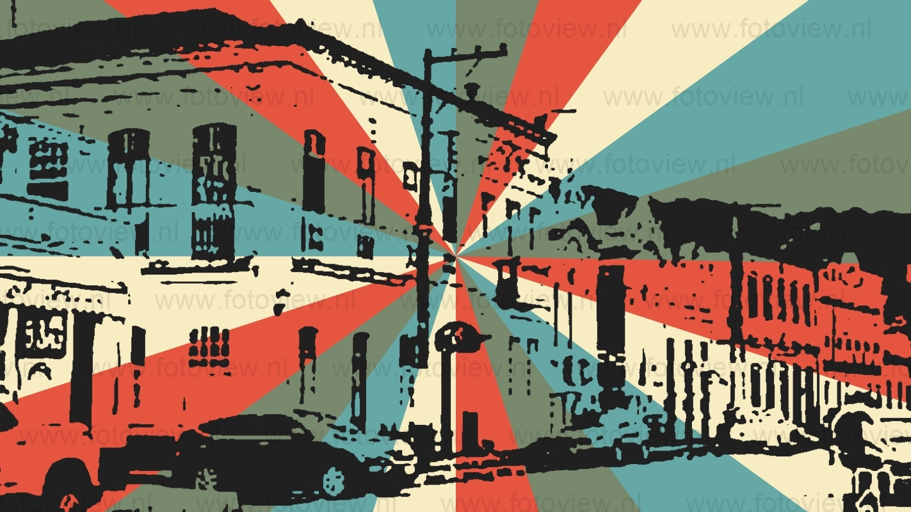
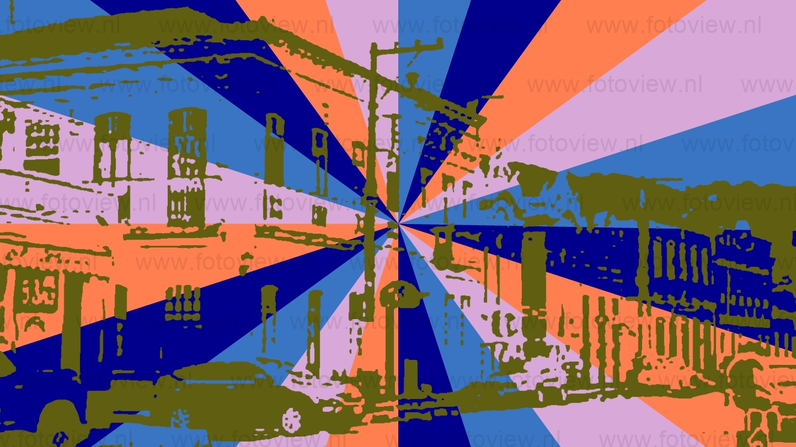
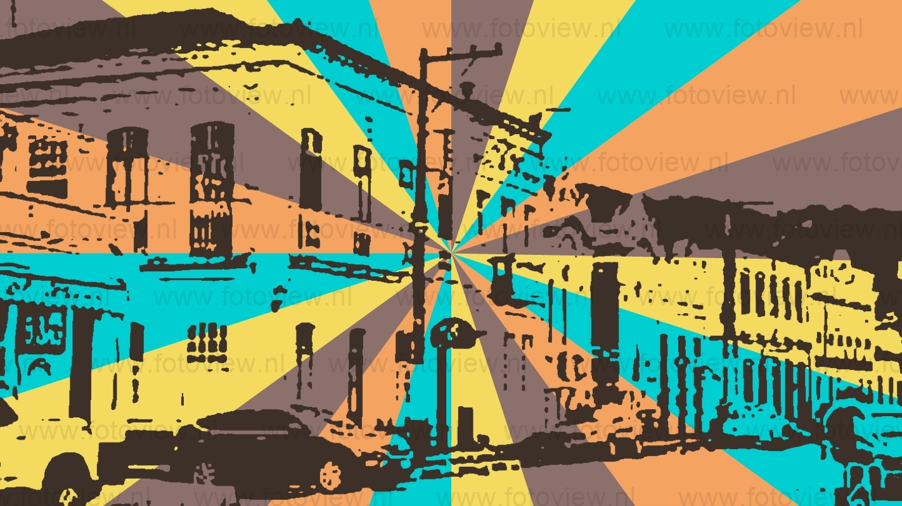

Iguape é o maior município brasileiro do estado de São Paulo. Localiza-se no Vale do Ribeira, a uma latitude 24º42'29" sul e a uma longitude 47º33'19" oeste, estando a uma altitude de três metros. Sua população estimada pelo Instituto Brasileiro de Geografia e Estatística em 2022 era de 29 115 habitantes. Com 1 978,795 quilômetros quadrados, é o município com a maior área do estado de São Paulo. Seu centro histórico é tombado pelo Instituto do Patrimônio Histórico e Artístico Nacional como patrimônio nacional desde 2009. A palavra "Iguape" tem origem na língua tupi antiga e significa "na enseada do rio", através da junção dos termos 'y (água, rio), kûá (enseada) e pe (em). Sambaquis Os primeiros habitantes da região onde hoje fica Iguape são conhecidos como "Homens do Sambaqui", povos muito primitivos que não conheciam sequer o arco e flecha e que viveram ali antes da chegada de índios com culturas mais avançadas. Sambaqui é o nome dado a grandes montes de conchas de ostras e marisco, depositadas ao longo de centenas ou talvez milhares de anos no mesmo lugar, e que eram consideradas como sendo locais mágicos. Mais tarde, após a extinção dos Homens de Sambaqui, os índios que viriam a dar origem à tribo Temiminé passaram a enterrar seus mortos nesses sambaquis, dentro de grandes potes de barro chamados igaçabas, juntamente com os pertences dos mortos. Existem vários sambaquis no complexo estuarino-lagunar de Iguape e Cananeia, sendo o de mais fácil acesso o sítio arqueológico "Benedito Fortes", onde está localizada a "Caverna do Ódio", próximo à ponte que dá acesso ao município de Ilha Comprida, a pouco mais de um quilômetro do centro da cidade. Até hoje, encontram-se vestígios de ações destes grupos indígenas, representados através da estratigrafia, que mostra a sobreposição de camadas correspondentes às diversas ocupações humanas, com a presença de manchas de carvão das fogueiras, sambaquis com até 5 000 anos, restos ósseos de peixes e de pequenos animais, e carapaças de moluscos e crustáceos. Em 1494, o Tratado de Tordesilhas firmado entre Portugal e Espanha estabelecia a dimensão de suas posses recém-descobertas, inclusive nas terras americanas. O tratado definia, como linha de demarcação, um meridiano 370 léguas a oeste do arquipélago de Cabo Verde, passando sobre o território de Iguape.[11] Possivelmente desde 1510, já vivia, na região, o aventureiro espanhol Ruy Garcia Moschera, a quem é oficialmente atribuída a fundação do município. Moschera vivera anteriormente no Rio da Prata e se instalara ali possivelmente por ser aquela uma região de disputa entre espanhóis e portugueses. Por volta do ano 1502, o degredado português Cosme Fernandes, conhecido como "Bacharel de Cananeia", também tornou-se uma figura poderosa na região, vindo a possuir muitos escravos e não prestando obediência à coroa portuguesa.
  